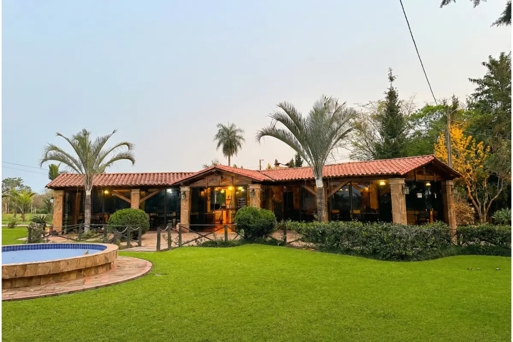

Hotel Granja Vy'aha
📍 San José de los Arroyos
🏊 Piscina
Descubrí las mejores 1 opciones verificadas para tu próximo evento o escapada en San José de los Arroyos
📍 San José de los Arroyos
San José de los Arroyos ofrece un entorno rural único para bodas campestres y eventos en Cordillera. Con hoteles rodeados de naturaleza y amplias áreas verdes, es el escenario perfecto para celebraciones memorables al aire libre.
Nuestras opciones en San José de los Arroyos combinan hospedaje tranquilo con espacios para eventos, piscina y la paz del campo paraguayo. Ideal para quienes buscan escapar de la ciudad.